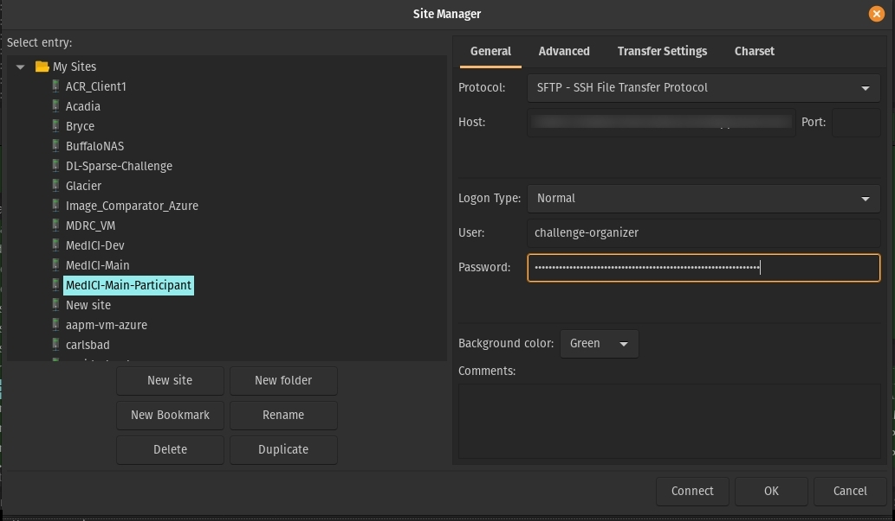
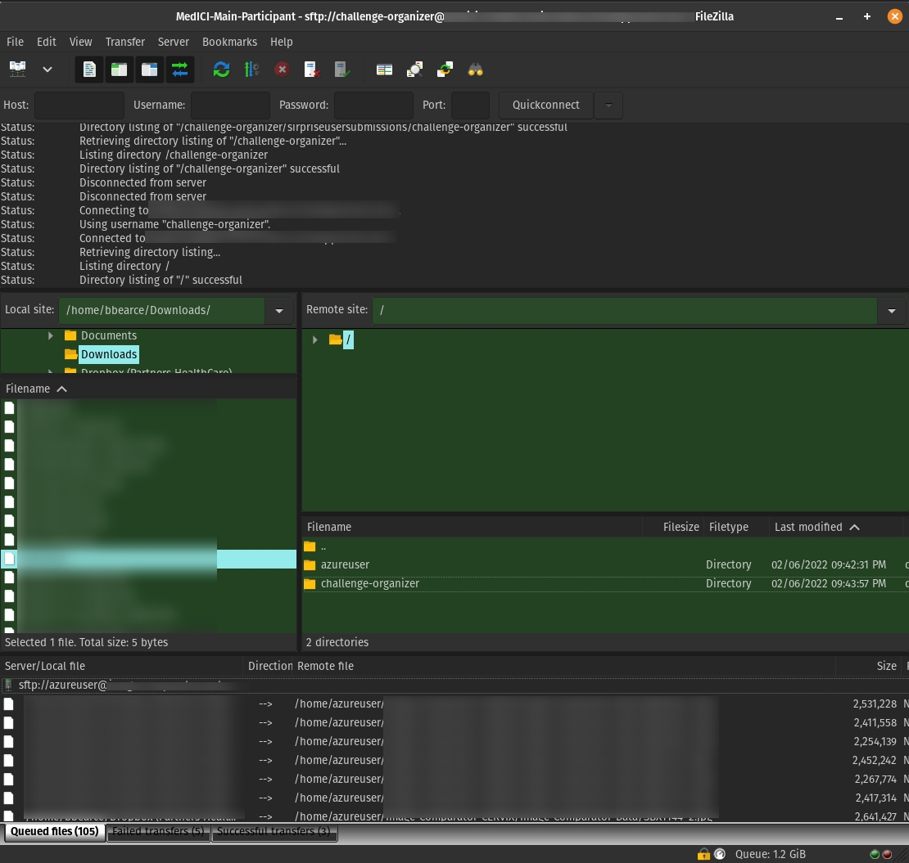

SFTP
Setup an SFTP server
Source: linuxconfig.org
"Secure File Transfer Protocol"
In this tutorial you will learn:
- How to install and configure SSH daemon
- How to setup an SFTP user account and group
- How to connect to SFTP server via command line
- How to connect to SFTP server via command line
SFTP requires SSH, so if SSH server is not already installed on your system, install it with the following command:
$ sudo apt install ssh
Once SSH is installed, we need to make some changes to the SSHD configuration file. Use nano or your favorite text editor to open it:
$ sudo vi /etc/ssh/sshd_config
Scroll to the bottom of the file and add the following 5 lines at the very end:
Match group sftp
ChrootDirectory /home
X11Forwarding no
AllowTcpForwarding no
ForceCommand internal-sftp
Restart the SSH service for these new changes to take effect:
$ sudo systemctl restart ssh
Create a new user group called sftp. All of our SFTP users will need to belong to this group.
$ sudo addgroup sftp
Adding group `sftp' (GID 1002) ...
Done.
Login
bbearce@terry:~$ sftp challenge-organizer@<server ip address>
challenge-organizer@<server ip address>'s password:
Connected to <server ip address>.
sftp> ls
azureuser challenge-organizer
sftp>
Use FileZilla
Real Example:
azureuser@codalab-vm:~$ ls -la /home
total 16
drwxr-xr-x 4 root root 4096 Feb 5 16:13 .
drwxr-xr-x 23 root root 4096 Jan 21 06:22 ..
drwxr-x--- 13 azureuser azureuser 4096 Feb 7 03:13 azureuser
drwx------ 6 challenge-organizer sftp 4096 Feb 7 02:43 challenge-organizer
$ sudo vi /etc/ssh/sshd_config
sshd_config:
Note: ChrootDirectories have to be owned by root.
Match group sftp
#Match user challenge-organizer # other option
ChrootDirectory /home
X11Forwarding no
AllowTcpForwarding no
ForceCommand internal-sftp

Notice how to the sftp user they are at
/but for them that is/home. You don't want to give them access to the real/. 